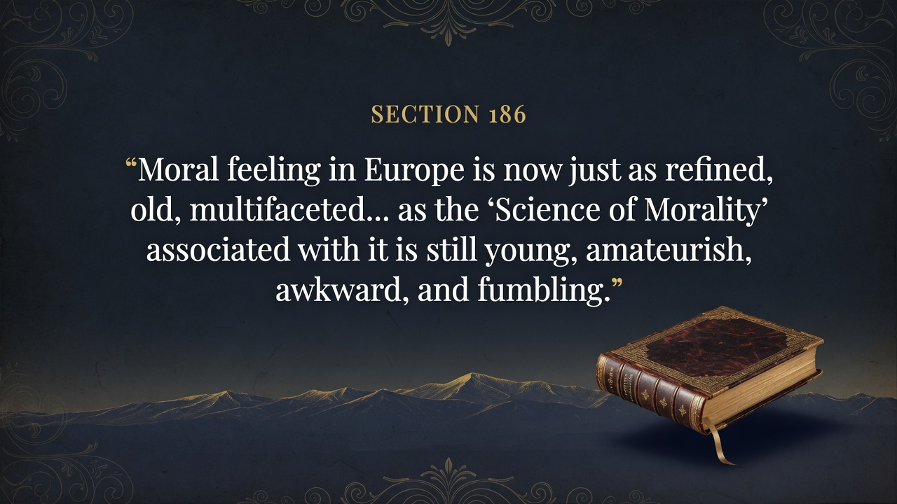
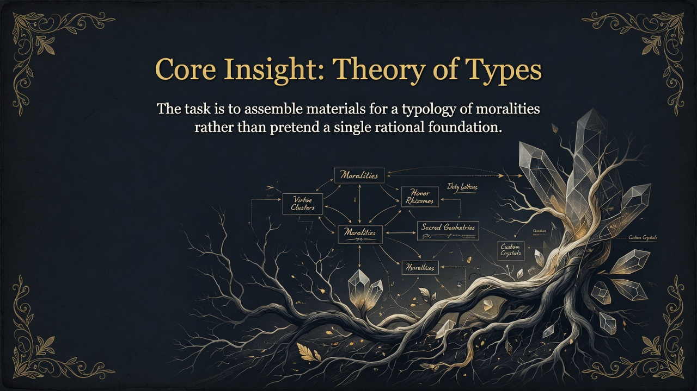
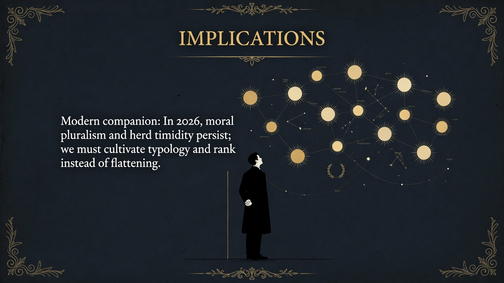

European moral feeling is old, layered, and sensitive, but the science studying it is still clumsy and amateur. Nietzsche wants a richer map of different moral types instead of one universal morality. We need psychology, not just preaching.
Nietzsche opens Part Five by contrasting the rich, ancient complexity of actual moral sentiments with the crude, overconfident attempts of philosophers to ground morality in reason. Moral life has evolved for millennia into an immense realm of delicate valuations, distinctions, and crystallizations. Yet moral philosophers have treated morality as something simply “given” and demanded a single rational foundation for it. They have been poor observers, selecting only the morality of their own class, age, or church, and never seriously compared multiple moralities.
The required work is modest but immense: to assemble materials, to organize conceptually, and to prepare a theory of types of morality. Instead, philosophers have offered scholarly versions of faith in the reigning morality, or new ways of expressing it. Even Schopenhauer’s principle “harm no one, help everyone as much as you can” reveals itself as tastelessly false and sentimental in a world whose essence is will to power.
What has passed for the “science of morals” lacks the problem of morality itself. Until we compare several moralities historically and psychologically, we remain inside one morality and cannot see it as a problem.
Section 186 launches the “natural history” that reorients ethics from rational justification to descriptive typology grounded in will to power, rank, and the different origins of moral sentiments. It sets up the distinction between herd morality and noble morality developed later in the book.
In 2026 we still lack a serious typology of moralities. Progressive, conservative, libertarian, religious, secular, and techno-optimist codes clash without genuine comparative understanding. AI ethics debates repeat the old error: assuming one universal rational foundation instead of mapping the living crystallizations of value. The free spirit today must practice the difficult modesty Nietzsche recommends—collecting and ranking moral phenomena before pronouncing foundations. Self-overcoming includes seeing one’s own morality as one type among others rather than the default of reason itself.


